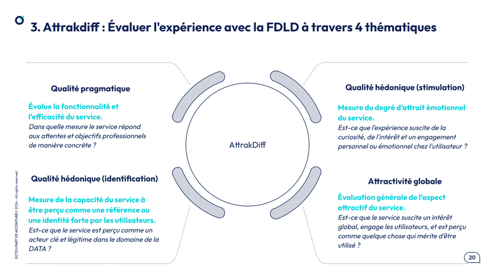
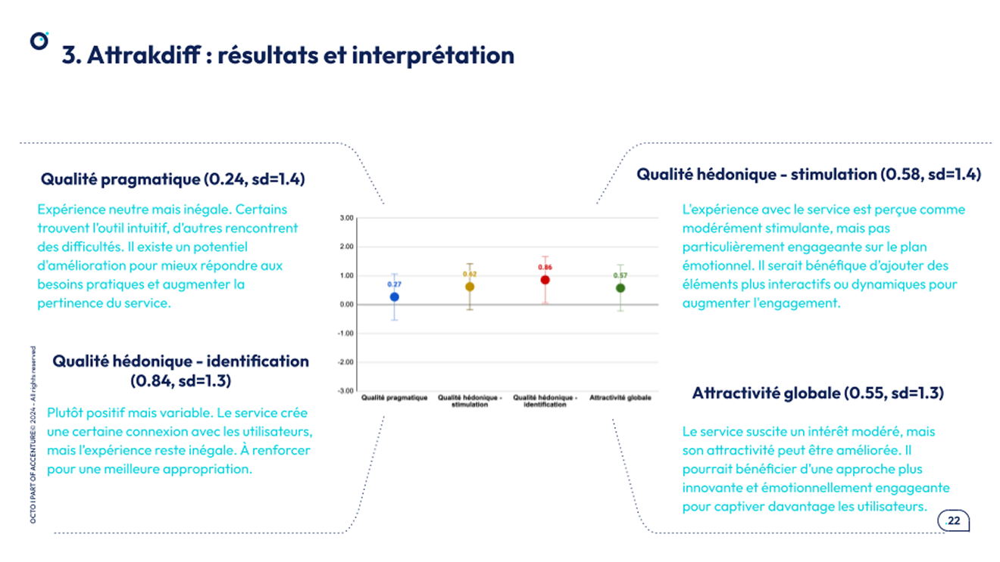

Étude de cas
Structurer et améliorer une offre de services data multi-acteurs (ADEME - Fabrique de la donnée)
Mission de service design, recherche utilisateur et analyse de données menée pour la Fabrique de la donnée de l’ADEME afin de mieux comprendre les usages, les interactions entre acteurs et structurer une offre de service data plus cohérente et alignée avec les besoins.
Le point de départ
La Fabrique de la donnée de l’ADEME propose des services data pour aider les organisations à développer, structurer et valoriser leurs usages liés à la donnée.
L’offre apporte déjà de la valeur, mais certaines difficultés de compréhension avaient été relevées : certaines ressources étaient difficiles à identifier, leur fonctionnement n’était pas toujours clair et leur mobilisation dans des projets concrets pouvait s’avérer complexe.
En parallèle, les équipes internes avaient besoin d’une vision plus structurée des attentes réelles des utilisateurs pour mieux comprendre les frictions, prioriser les évolutions et améliorer la qualité globale du service.
J’ai repris cette mission en remplacement d’un collègue, avec l’objectif de transformer une matière riche mais dispersée en une lecture claire, exploitable et directement utile pour les équipes.

Projet : transformer des signaux dispersés en décisions de service
L’enjeu n’était pas seulement de recueillir des retours utilisateurs, mais de construire une lecture fiable et structurée de l’expérience vécue par les parties prenantes, afin d’aider les équipes à prendre de meilleures décisions sur l’évolution de leurs services.
Comprendre les besoins réels
- Analyse qualitative de plus de 90 retours utilisateurs et parties prenantes
- Transcription et analyse assistées par IA pour faire émerger les thèmes récurrents
- Structuration des insights via une approche de recherche atomique
- Création de personas pour représenter les profils, attentes et irritants
Objectiver les constats
- Mesures quantitatives à partir de questionnaires UX standardisés
- Analyse statistique descriptive et inférentielle sur plus de 20 indicateurs
- Croisement des données qualitatives et quantitatives pour limiter les biais d’interprétation
- Identification d’axes structurants liés à la satisfaction, à l’utilisabilité et à l’accès aux ressources
Rendre les résultats actionnables
Le vrai sujet était de ne pas laisser les résultats au stade du constat. J’ai donc traduit les analyses en livrables de synthèse et en recommandations directement mobilisables par les équipes.
- des insights clairs, exploitables et priorisés
- des livrables visuels pour faciliter l’appropriation
- des recommandations orientées impact et faisabilité
- des pistes d’optimisation pour simplifier l’expérience et mieux répondre aux usages réels
Ce que ça a changé
La mission a permis de passer d’une masse d’informations hétérogènes à une vision structurée des besoins, des irritants et des opportunités d’amélioration. Les équipes ont pu s’appuyer sur des éléments plus clairs pour comprendre leurs utilisateurs, prioriser les évolutions et faire avancer leurs services.
Ce que j’ai apporté à ce projet
Sur cette mission, j’ai apporté une capacité à faire le lien entre recherche utilisateur, analyse de données et amélioration de service. Mon rôle a consisté à structurer une matière dense, à croiser différentes sources d’information et à la traduire en décisions concrètes.
Ce projet montre aussi ma manière de travailler sur des sujets complexes : combiner rigueur d’analyse, clarté de restitution et sens du service pour aider des équipes à avancer à partir de besoins réels, plutôt que d’hypothèses floues.
Exemples de livrables

